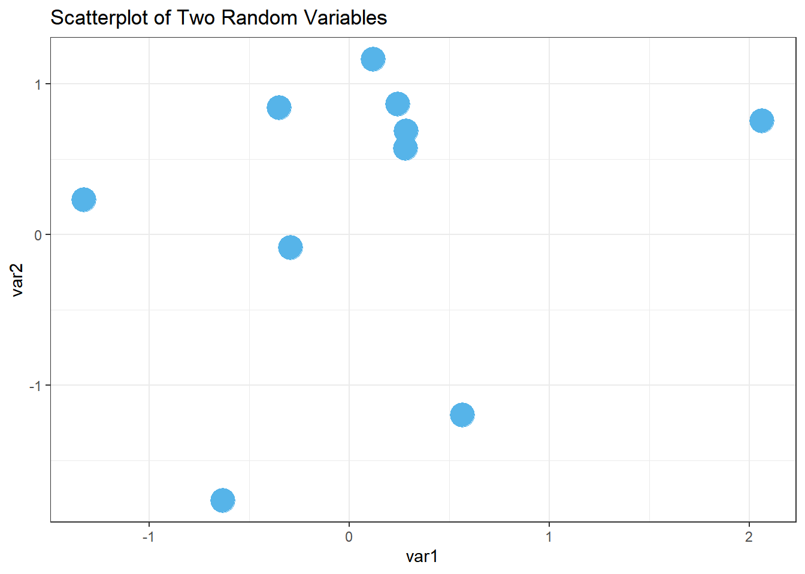
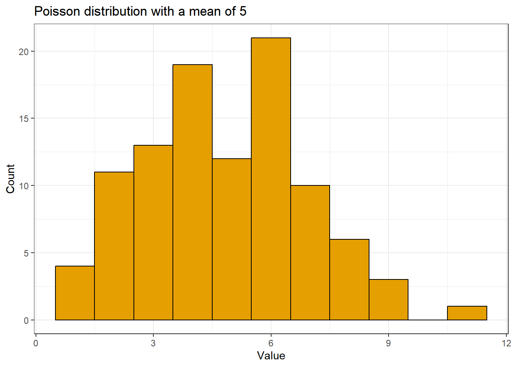
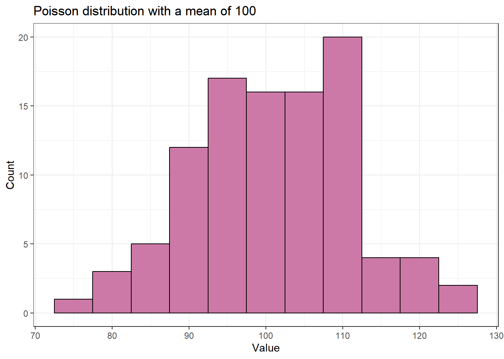

83 Getting Started with Data Simulations in R
This module introduces the basics of data simulation using R. Although we won’t cover every aspect of data simulation in this module, we’ll delve into some of the core functions. Drawing inspiration from Ariel Muldoon’s tutorial on simulation helper functions, this module introduces practical methods for creating simulated datasets.
Our focus will be on functions from the base R package, which is included with every installation of R. These functions are easy to use and are great for getting started with simulations. We will cover various approaches to generating both quantitative and categorical variables, enhancing your data science toolkit.
83.1 Learning goals
- To generate quantitative variables using functions such as
rnorm(),runif(), andrpois(). - To generate categorical variables like group names using
rep(), and explore various methods to replicate patterns. - To integrate the creation of datasets that include both quantitative and categorical variables.
- To use
replicate()to perform the data simulation process multiple times.
83.2 Generating Variables
83.2.1 Generating Random Numbers
One method for generating numeric data in R involves using the “random deviate” functions to pull random numbers from statistical distributions. These functions, which all begin with the letter ‘r’, are designed to generate random numbers from specific statistical distributions. The letter “r” to indicate that they generate random numbers (e.g., rnorm() for the normal distribution). Here are some of the most commonly used random deviate functions in R:
- Normal Distribution (rnorm()): Used for generating data that follows a Gaussian distribution.
- Uniform Distribution (runif()): Ideal for creating evenly distributed numbers over a specified range.
- Poisson Distribution (rpois()): Useful for modeling count-based data, such as the number of events happening within a fixed period.
These functions are part of the core stats package, which also includes tools for generating data from binomial, F, log-normal, beta, exponential, and gamma distributions. More exotic distributions are available through additional packages.
The r functions for a chosen distribution all work similarly. The syntax for these functions typically requires specifying the number of random numbers to generate (n) and defining the parameters for the distribution you want to draw from.
For example, to generate random values from these distributions, you would use:
# Generating five random normal values
rnorm(5, mean = 0, sd = 1)
#> [1] 0.134 1.617 0.245 -0.118 0.714
# Generating five uniform values between 0 and 1
runif(5, min = 0, max = 1)
#> [1] 0.9570 0.9184 0.0192 0.9367 0.9227
# Generating five Poisson-distributed values with a mean of 3
rpois(5, lambda = 3)
#> [1] 4 8 4 2 283.2.2 Deep Dive into the Normal Distribution (rnorm())
rnorm() is frequently used in statistical simulations to generate random numbers that follow a normal (Gaussian) distribution. The function rnorm() requires three main arguments:
n: the number of observations to generate.mean: the mean of the normal distribution.sd: the standard deviation of the distribution. (note thatsdis the standard deviation, not the variance)
Using these, generating five random numbers from a \(Normal(0, 1)\) (aka the standard normal) standard distribution can be performed as follows:
83.2.3 Writing Out Arguments Explicitly
Let’s talk about this code and it’s output.
First, the code gave me 5 numbers, which is what I wanted. (Yay!😸) However, the code itself isn’t particularly clean. What I might refer to as lazy coding on my part can look pretty mysterious to someone reading my code (or to my future self reading my code). Because I used the default values for mean and sd, it’s not clear exactly what distribution I drew the numbers from. When future me revisits this code, she will have to remember what the defaults are. Is that a realistic request? Maybe, but future me has to remember a lot of things, so as a kindness to her, its worthwhile to make those arguments explicit. That way future me does not have to remember what the defaults are and she can quickly work her way through the code.
In other words, specify the arguments explicitly, even if you are using default values. This practice makes your code self-documenting, meaning that anyone reading it can understand at a glance which distribution the data comes from, without needing to remember the default settings of the function.
Here’s a more readable version for generating five random numbers from a standard normal distribution, with explicit argument names:
When I’m writing code for a project that I know will be shared with others, I always (try to) write out the arguments. When I’m writing code for myself, I’m more likely to use the defaults. It’s a balance between being kind to future me and being efficient in the moment.
83.2.3.1 Setting the random seed for reproducible random numbers
Second, if we run this code again we’ll get different numbers. To get reproducible random numbers we need to set the seed via set.seed().
Making sure someone else will be able to exactly reproduce your results when running the same code can be desirable in teaching. It is also is useful when making an example data set to demonstrate a coding issue, like if you were asking a code question on Stack Overflow.
I also will set the seed when I’m making a function for simulations and I want to make sure it works correctly. Otherwise in most simulations we don’t actually want or need to set the seed.
If we set the seed prior to running rnorm(), we can reproduce the values we generate.
If we set the seed back to the same number and run the code again, we get the same values.
83.2.3.2 Change parameters in rnorm()
For getting a quick set of numbers it’s easy to use the default parameter values in rnorm() but we can certainly change the values to something else. For example, when I’m exploring long-run behavior of variance estimated from linear models I will want to vary the standard deviation values.
The sd argument shows the standard deviation of the normal distribution. So drawing from a \(Normal(0, 4)\) can be done by setting sd to 2.
I’ve seen others change the mean and standard deviation to create a variable that is within some specific range, as well. For example, if the mean is large and the standard deviation small in relation to the mean we can generate strictly positive numbers. (I usually use runif() for this, which we’ll see below.)
83.2.3.3 Using vectors of values for the parameter arguments
We can also use vectors for arguments! We can pull random numbers from a normal distribution with distinct parameters if we use a vector for the parameter arguments. For example, this could be useful for simulating data with different group means but the same variance. We might want to use something like this if we were making data that we would analyze using an ANOVA.
I’ll keep the standard deviation at 1 but will draw data from three distribution centered at three different locations: one at 0, one at 5, and one at 20. I request 10 total draws by changing n to 10.
Note the repeating pattern: the function iteratively draws one value from each distribution until the total number requested is reached. This can lead to imbalance in the sample size per distribution.
rnorm(n = 10,
mean = c(0, 5, 20),
sd = 1)
#> [1] -1.663 5.576 20.473 -0.543 6.128 18.352 -0.314 4.817 21.470 -0.866A vector can also be passed to sd. Here both the means and standard deviations vary among the three distributions used to generate values.
rnorm(n = 10,
mean = c(0, 5, 20),
sd = c(1, 5, 20) )
#> [1] 1.527 10.271 40.601 0.840 6.085 6.549 0.133 4.645 1.146 -1.022Things are different for the n argument. If a vector is passed to n, the length of that vector is taken to be the number required (see Arguments section of documentation for details).
Here’s an example. Since the vector for n is length 3, we only get 3 values.
83.2.4 Example of using the simulated numbers from rnorm()
Up to this point we’ve printed the results of each simulation. In reality, we’d want to save our vectors as objects in R to use them for some further task.
For example, maybe we want to simulate two unrelated variables and then look to see how correlated they appear to be. This can be a fun exercise to demonstrate how variables can appear to be related by chance even when we know they are not, especially at small sample sizes.
Let’s generate two quantitative vectors of length 10, which I’ll name x and y, and plot the results. I’m using the defaults for mean and sd.
x <- rnorm(n = 10,
mean = 0,
sd = 1)
y <- rnorm(n = 10,
mean = 0,
sd = 1)
df_demo <- data.frame(var1=x,
var2=y)
ggplot(
data = df_demo,
aes(x = var1,
y = var2)) +
geom_point(color="#56B4E9",size=7) +
theme_bw() +
labs(title="Scatterplot of Two Random Variables")
83.2.5 runif() pulls from the uniform distribution
Pulling random numbers from other distributions is extremely similar to using rnorm(), so we’ll go through them more quickly.
I’ve started using runif() pretty regularly, especially when I want to easily generate numbers that are strictly positive but continuous. The uniform distribution is a continuous distribution, with numbers uniformly distributed between some minimum and maximum.
From Usage we can see that by default we pull random numbers between 0 and 1. The first argument, as with all of these r functions, is the number of deviates we want to randomly generate:
runif(n, min = 0, max = 1)
Let’s generate 5 numbers between 0 and 1.
What if we want to generate 5 numbers between 50 and 100? We can change the parameter values.
83.2.6 Example of using the simulated numbers from runif()
One situation where I’ve found runif() handy is when I wanted to demonstrate the effect of the relative size of the variable values on the size of the estimated coefficient in a regression. For example, the size of the coefficient measured in kilometers is smaller than if that variable was converted into meters.
Let’s generate some data with the response variable (y) pulled from a standard normal distribution and then an explanatory variable with values between 1 and 2. The two variables are unrelated.
You see I’m still writing out my argument names for clarity, but you may get a sense how easy it would be to start cutting corners to avoid the extra typing.
set.seed(16)
y <- rnorm(n = 100, mean = 0, sd = 1)
x1 <- runif(n = 100, min = 1, max = 2)
head(x1)
#> [1] 1.96 1.08 1.71 1.33 2.00 1.45Now simulate a second explanatory variable with values between 200 and 300. This variable is also unrelated to the other two.
We can fit a multiple regression linear model via lm(). The coefficient for the second variable, with a larger relative size, is generally going to be smaller than the first since the change in y for a “1-unit increase” in x depends on the units of x.
83.2.7 Discrete counts with rpois()
Let’s look at one last function for generating random numbers, this time for generating discrete integers (including 0) from a Poisson distribution with rpois().
I use rpois() for generating counts for exploring generalized linear models. I’ve also found this function useful in gaining a better understanding of the shape of Poisson distributions with different means.
The Poisson distribution is a single parameter distribution. The function looks like:
rpois(n, lambda) The single parameter,
lambda, is the mean. It has no default setting so must always be defined by the user.
Let’s generate five values from a Poisson distribution with a mean of 2.5. Note that mean of the Poisson distribution can be any non-negative value (i.e., it doesn’t have to be an integer) even though the observed values will be discrete integers.
83.2.8 Example of using the simulated numbers from rpois()
Let’s explore the Poisson distribution a little more, seeing how the distribution looks when changing the mean. Being able to look at how the Poisson distribution changes with the mean via simulation helped me understand the distribution better, including why it so often does a poor job modeling ecological count data.
We’ll draw 100 values from a Poisson distribution with a mean of 5. We’ll name this vector y and take a look at a summary of those values.
The vector of values we simulated fall between 1 and 14.
There is mild right-skew when we draw a histogram of the values.
palette_OkabeIto <- c("#E69F00", "#56B4E9", "#009E73", "#F0E442", "#0072B2", "#D55E00", "#CC79A7", "#999999")
df_demo <- data.frame(y)
ggplot(df_demo, aes(x=y)) + geom_histogram(binwidth=1,color="black", fill="#E69F00") +
labs(title="Poisson distribution with a mean of 5",x= "Value", y = "Count") + theme_bw()
Let’s do the same thing for a Poisson distribution with a mean of 100. The range of values is pretty narrow; there are no values even remotely close to 0.
y <- rpois(100, lambda = 100)
summary(y)
#> Min. 1st Qu. Median Mean 3rd Qu. Max.
#> 76.0 94.8 102.0 101.3 108.0 124.0The distribution is pretty symmetric compared to the distribution with the smaller mean.
df_demo <- data.frame(y)
ggplot(df_demo, aes(x=y)) + geom_histogram(binwidth=5,color="black",fill= "#CC79A7") +
labs(title="Poisson distribution with a mean of 100",x= "Value", y = "Count") + theme_bw()
An alternative to the Poisson distribution for discrete integers is the negative binomial distribution. Packages MASS has a function called rnegbin() for random number generation from the negative binomial distribution.
83.3 Generate character vectors with rep()
Quantitative variables are great, but in simulations we’re often going to need categorical variables, as well. Categorical variables are useful for simulations that involve groups or treatments.
The rep() function in R simplifies the creation of these kinds of variables by replicating elements of vectors or lists. This functionality is particularly useful for avoiding having to write out an entire vector manually. This makes it easier to construct large datasets.
83.3.1 Using letters and LETTERS
The first argument of rep() is the vector to be repeated. One option is to write out the character vector you want to repeat. You can also get a simple character vector through the use of letters or LETTERS. These are built in constants in R. letters is the 26 lowercase letters of the Roman alphabet and LETTERS is the 26 uppercase letters.
Letters can be pulled out via the extract brackets ([). These built-in constants are convenient for when I need to make a basic categorical vector and it doesn’t matter what form those categories take. I find it more straightforward to type out the word and brackets than a vector of characters (complete with all those pesky quotes and such).
Here are the first two letters.
And the last 17 LETTERS.
83.3.2 Repeat each element of a vector with each
There are three arguments that help us repeat the values in the vector in rep() with different patterns: each, times, and length.out. These can be used individually or in combination.
With each we repeat each unique character in the vector the defined number of times. The replication is done “elementwise”, so the repeats of each unique character are all in a row.
Let’s repeat two characters three times each. The resulting vector is 6 observations long.
This is an example of how you can quickly make a grouping variable for simulating data to be used in a two-sample analysis.
83.3.3 Repeat a whole vector with the times argument
The times argument can be used when we want to repeat the whole vector rather than repeating it elementwise.
We’ll make a two-group variable again, but this time we’ll change the repeating pattern of the values in the variable.
83.3.4 Set the output vector length with the length.out argument
The length.out argument has rep() repeat the whole vector. However, it repeats the vector only until the defined length is reached. Using length.out is another way to get unbalanced groups.
Rather than defining the number of repeats like we did with each and times we define the length of the output vector.
Here we’ll make a two-group variable of length 5. This means the second group will have one less value than the first.
83.3.5 Repeat each element a different number of times
Unlike each and length.out, we can use times with a vector of values. This allows us to repeat each element of the character vector a different number of times. This is one way to simulate unbalanced groups. Using times with a vector repeats each element like each does, which can make it harder to remember which argument does what.
Let’s repeat the first element twice and the second four times.
83.3.6 Combining each with times
As your simulation situation get more complicated, you may need more complicated patterns for your categorical variable. The each argument can be combined with times to first repeat each value elementwise (via each) and then repeat that whole pattern (via times).
When using times this way it will only take a single value and not a vector.
Let’s repeat each value twice, 3 times.
83.3.7 Combining each with length.out
Similarly we can use each with length.out. This can lead to some imbalance.
Here we’ll repeat the two values twice each but with a total final vector length of 7.
Note you can’t use length.out and times together (if you try, length.out will be given priority and times ignored).
83.4 Creating datasets with quantitative and categorical variables
We now have some tools for creating quantitative data as well as categorical. Which means it’s time to make some datasets! We’ll create several simple ones to get the general idea.
83.4.1 Simulate data with no differences among two groups
Let’s start by simulating data for a simple two-sample analysis with no difference between the groups. We’ll create a dataset with six observations—three for each group.
We will use the functions discussed earlier to create this dataset and store the results in a data frame for organization and ease of access. Unlike some beginners who might use cbind() for this purpose, it’s more efficient and standard to use data.frame() directly:
We’ll be using the tools we reviewed above but will now name the output and combine them into a data.frame. This last step isn’t always necessary, but does help keep things organized in certain types of simulations.
First, we’ll make separate vectors for the continuous and categorical data and then bind them together via data.frame().
Notice there is no need to use cbind() here, which is commonly done by R beginners (I know I did!). Instead we can use data.frame() directly.
group <- rep(letters[1:2], each = 3)
response <- rnorm(n = 6, mean = 0, sd = 1)
data.frame(group,
response)
#> group response
#> 1 a 0.493
#> 2 a 0.523
#> 3 a 1.237
#> 4 b 0.356
#> 5 b 0.575
#> 6 b -0.422Some people like to define the vectors and the data frame simultaneously to minimize clutter in the R environment. Here is how you can do it all at once:
data.frame(group = rep(letters[1:2], each = 3),
response = rnorm(n = 6, mean = 0, sd = 1) )
#> group response
#> 1 a 0.402
#> 2 a 0.959
#> 3 a -1.876
#> 4 b -0.212
#> 5 b 1.437
#> 6 b 0.386(Personally, I like having longer code that is easier for future Mason to read. But it’s up to you!)
Now, let’s add another layer to our dataset by introducing a second categorical variable. Assume we have two factors, not one, and that these factors are ‘crossed’—meaning every possible combination of the two factors appears at least once in the dataset.
For the second factor, which we’ll call factor, let’s give it the values “C”, “D”, and “E”:
We need to repeat the values in a way that every combination of group and factor is present in the dataset at one time.
Remember the group factor is repeated elementwise.
We need to repeat the three values twice. But what argument do we use in rep() to do so?
Does each work?
No, if we use each then each element is repeated twice and some of the combinations of group and factor are missing.
This is a job for the times or length.out arguments, so the whole vector is repeated. We can repeat the whole vector twice using times, or use length.out = 6. I do the former.
In the result below we can see every combination of the two factors is present once.
83.4.2 Simulate data with a difference among groups
The dataset above is one with “no difference” among groups. What if the means were different between groups? Let’s make two groups of three observations where the mean of one group is 5 and the other is 10. The two groups have a shared variance (and so standard deviation) of 1.
Remembering how rnorm() works with a vector of means is key here. The function draws iteratively from each distribution.
How do we get the group pattern correct?
We need to repeat the whole vector three times instead of elementwise.
To get the groups in the correct order we need to use times or length.out in rep(). With length.out we define the output length of the vector, which is 6. Alternatively we could use times = 3 to repeat the whole vector 3 times.
These can then be combined into a data.frame. Working out this process is another reason why sometimes we build each vector separately prior to combining together.
83.4.3 Multiple quantitative variables with groups
For our last dataset we’ll have two groups, with 10 observations per group.
rep(LETTERS[3:4], each = 10)
#> [1] "C" "C" "C" "C" "C" "C" "C" "C" "C" "C" "D" "D" "D" "D" "D" "D" "D" "D" "D"
#> [20] "D"Let’s make a dataset that has two quantitative variables, unrelated to both each other and the groups. One variable ranges from 10 and 15 and one from 100 and 150.
How many observations should we draw from each uniform distribution?
We had 2 groups with 10 observations each and 2*10 = 20. So we need to use n = 20 in runif().
Here is the dataset made in a single step.
data.frame(group = rep(LETTERS[3:4], each = 10),
x = runif(n = 20, min = 10, max = 15),
y = runif(n = 20, min = 100, max = 150))
#> group x y
#> 1 C 13.2 127
#> 2 C 13.9 137
#> 3 C 12.7 135
#> 4 C 14.3 123
#> 5 C 11.7 118
#> 6 C 14.6 108
#> 7 C 12.8 142
#> 8 C 13.5 104
#> 9 C 13.9 107
#> 10 C 12.2 145
#> 11 D 12.0 117
#> 12 D 13.7 121
#> 13 D 14.8 145
#> 14 D 11.7 120
#> 15 D 13.3 140
#> 16 D 10.8 107
#> 17 D 14.0 148
#> 18 D 14.9 113
#> 19 D 13.5 105
#> 20 D 14.4 120What happens if we get this wrong? If we’re lucky we get an error.
data.frame(group = rep(LETTERS[3:4], each = 10),
x = runif(n = 15, min = 10, max = 15),
y = runif(n = 15, min = 100, max = 150))
#> Error in data.frame(group = rep(LETTERS[3:4], each = 10), x = runif(n = 15, : arguments imply differing number of rows: 20, 15But if we get things wrong and the number we use goes into the number we need evenly, R will recycle the vector to the end of the data.frame().
This is a hard mistake to catch. If you look carefully through the output below you can see that the continuous variables start to repeat on line 10.
data.frame(group = rep(LETTERS[3:4], each = 10),
x = runif(n = 10, min = 10, max = 15),
y = runif(n = 10, min = 100, max = 150))
#> group x y
#> 1 C 12.3 108
#> 2 C 13.8 115
#> 3 C 12.4 105
#> 4 C 10.1 125
#> 5 C 10.8 130
#> 6 C 11.0 129
#> 7 C 11.5 149
#> 8 C 13.5 139
#> 9 C 11.6 120
#> 10 C 12.9 120
#> 11 D 12.3 108
#> 12 D 13.8 115
#> 13 D 12.4 105
#> 14 D 10.1 125
#> 15 D 10.8 130
#> 16 D 11.0 129
#> 17 D 11.5 149
#> 18 D 13.5 139
#> 19 D 11.6 120
#> 20 D 12.9 12083.5 Repeatedly simulate data with replicate()
The replicate() function is a real workhorse when making repeated simulations. It is a member of the apply family in R, and is specifically made (per the documentation) for the repeated evaluation of an expression (which will usually involve random number generation).
We want to repeatedly simulate data that involves random number generation, so that sounds like a useful tool.
The replicate() function takes three arguments:
n, which is the number of replications to perform. This is to set the number of repeated runs we want.
expr, the expression that should be run repeatedly. This is often a function.
simplify, which controls the type of output the results ofexprare saved into. Usesimplify = FALSEto get output saved into a list instead of in an array.
83.5.1 Simple example of replicate()
Let’s say we want to simulate some values from a normal distribution, which we can do using the rnorm() function as above. But now instead of drawing some number of values from a distribution one time we want to do it many times. This could be something we’d do when demonstrating the central limit theorem, for example.
Doing the random number generation many times is where replicate() comes in. It allows us to run the function in expr exactly n times.
Here I’ll generate 5 values from a standard normal distribution three times. Notice the addition of simplify = FALSE to get a list as output.
The output below is a list of three vectors. Each vector is from a unique run of the function, so contains five random numbers drawn from the normal distribution with a mean of 0 and standard deviation of 1.
set.seed(16)
replicate(n = 3,
expr = rnorm(n = 5, mean = 0, sd = 1),
simplify = FALSE )
#> [[1]]
#> [1] 0.476 -0.125 1.096 -1.444 1.148
#>
#> [[2]]
#> [1] -0.4684 -1.0060 0.0636 1.0250 0.5731
#>
#> [[3]]
#> [1] 1.847 0.112 -0.746 1.658 0.722Note if I don’t use simplify = FALSE I will get a matrix of values instead of a list. Each column in the matrix is the output from one run of the function.
In this case there will be three columns in the output, one for each run, and 5 rows. This can be a useful output type for some simulations. I focus on list output throughout the rest of this post only because that’s what I have been using recently for simulations.
83.5.2 An equivalent for() loop example
A for() loop can be used in place of replicate() for simulations. With time and practice I’ve found replicate() to be much more convenient in terms of writing the code. However, in my experience some folks find for() loops intuitive when they are starting out in R. I think it’s because for() loops are more explicit on the looping process: the user can see the values that i takes and the output for each i iteration is saved into the output object because the code is written out explicitly.
In my example I’ll save the output of each iteration of the loop into a list called list1. I initialize this as an empty list prior to starting the loop. To match what I did with replicate() I do three iterations of the loop (i in 1:3), drawing 5 values via rnorm() each time.
The result is identical to my replicate() code above. It took a little more code to do it but the process is very clear since it is explicitly written out.
set.seed(16)
list1 <- list() # Make an empty list to save output in
for (i in 1:3) { # Indicate number of iterations with "i"
list1[[i]] <- rnorm(n = 5, mean = 0, sd = 1) # Save output in list for each iteration
}
list1
#> [[1]]
#> [1] 0.476 -0.125 1.096 -1.444 1.148
#>
#> [[2]]
#> [1] -0.4684 -1.0060 0.0636 1.0250 0.5731
#>
#> [[3]]
#> [1] 1.847 0.112 -0.746 1.658 0.72283.5.3 Using replicate() to repeatedly make a dataset
Earlier we were making datasets with random numbers and some grouping variables. Our code looked like
data.frame(group = rep(letters[1:2], each = 3),
response = rnorm(n = 6, mean = 0, sd = 1) )
#> group response
#> 1 a -1.663
#> 2 a 0.576
#> 3 a 0.473
#> 4 b -0.543
#> 5 b 1.128
#> 6 b -1.648We could put this process as the expr argument in replicate() to get many simulated datasets. I would do something like this if I wanted to compare the long-run performance of two different statistical tools using the exact same random datasets.
I’ll replicate things 3 times again to easily see the output. I still use simplify = FALSE to get things into a list.
simlist <- replicate(n = 3,
expr = data.frame(group = rep(letters[1:2], each = 3),
response = rnorm(n = 6, mean = 0, sd = 1) ),
simplify = FALSE)We can see this result is a list of three data.frames.
str(simlist)
#> List of 3
#> $ :'data.frame': 6 obs. of 2 variables:
#> ..$ group : chr [1:6] "a" "a" "a" "b" ...
#> ..$ response: num [1:6] -0.314 -0.183 1.47 -0.866 1.527 ...
#> $ :'data.frame': 6 obs. of 2 variables:
#> ..$ group : chr [1:6] "a" "a" "a" "b" ...
#> ..$ response: num [1:6] 1.03 0.84 0.217 -0.673 0.133 ...
#> $ :'data.frame': 6 obs. of 2 variables:
#> ..$ group : chr [1:6] "a" "a" "a" "b" ...
#> ..$ response: num [1:6] -0.943 -1.022 0.281 0.545 0.131 ...Here is the first one.
83.6 What’s the next step?
I’m ending here, but there’s still more to learn about simulations. For a simulation to explore long-run behavior, some process is going to be repeated many times. We did this via replicate(). The next step would be to extract whatever results are of interest. This latter process is often going to involve some sort of looping.
By saving our generated variables or data.frames into a list we’ve made it so we can loop via list looping functions like lapply() or purrr::map(). The family of map functions are newer and have a lot of convenient output types that make them pretty useful.
Happy simulating!